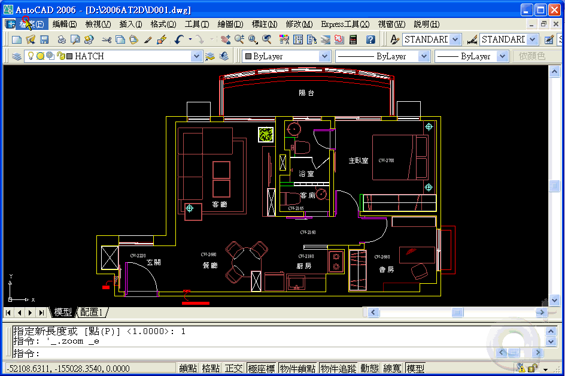
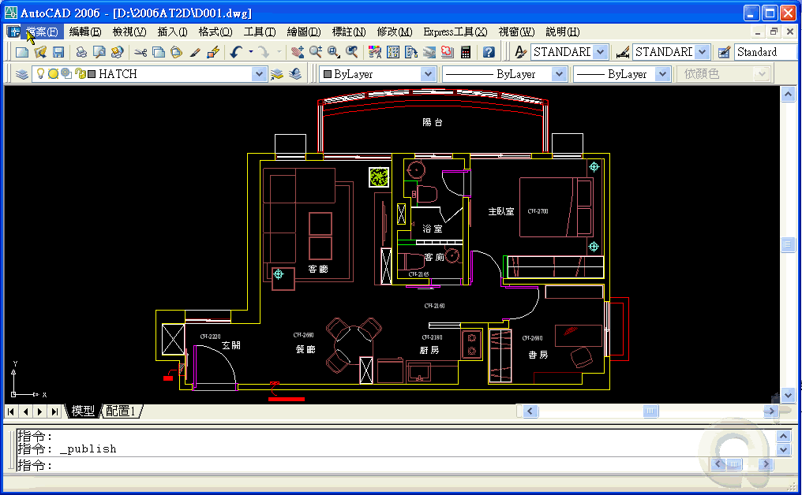

請使用「出版」PUBLISH 指令

但是須搭配「頁面設定」PAGESETUP 指令，即可大量快速的出圖

此功能為 AutoCAD 2004 以上版本的功能，輕輕鬆鬆的簡單出圖就不再是難事了。
而出圖是一門學問，其實並不難，了解運用後你會發現其實很簡單。
但是須搭配「頁面設定」PAGESETUP 指令，即可大量快速的出圖。
此功能為 AutoCAD 2004 以上版本的功能，輕輕鬆鬆的簡單出圖就不再是難事了。
而出圖是一門學問，其實並不難，了解運用後你會發現其實很簡單。
PS:此「出版」滿足 模型標籤或配置標籤 的出圖，只需在出版選擇 模型標籤或配置標籤即可。
以下為動態操作步驟:有問題請再提~
※※※ 適用於 AutoCAD 2004 以上版本 ※※※
1.開啟第1張圖面(D001.dwg) → 開啟「頁面設定」對話方塊 → 新增 A4 出圖規劃的頁面設定 → 設為目前的 → 儲存檔案。

https://2img.net/h/i143.photobucket.com/albums/r134/op90o/G0014c.gif
2.開啟「出版」對話方塊 → 取消配置標籤 → 選擇出圖的所有圖檔 → 將所有圖面全選 → 選擇「A4」頁面設定 → 使用在頁面設定中輸出設備 → 出版。

https://2img.net/h/i143.photobucket.com/albums/r134/op90o/G0014d.gif
ps:再螢幕右下角有一個出圖機圖示，會顯示出圖狀況。